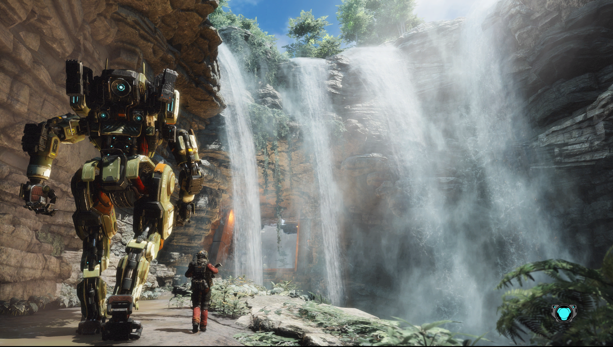

Titanfall 2
Un fast pace fps à l'hisoire intrigante
Titanfall 2 est un jeu vidéo de tir en vue à la première personne développé par Respawn Entertainment et édité par Electronic Arts, sorti en octobre 2016 sur playstation, Xbox et PC. C'est la suite de Titanfall.
